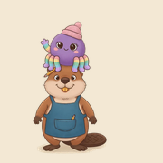

Für dich als Lehrperson
So war’s für die Kinder
Rückmeldungen zu euren Projekten – an einem Ort.
Nur dein Lehrpersonen-Konto kann diese Rückmeldungen lesen. Rückmeldungen und Audio werden nach 90 Tagen automatisch gelöscht.
Anmeldung wird geprüft …
Klassen & Tablets einrichten
Erstelle einen Klassenlink. Öffne ihn einmal auf jedem Tablet dieser Klasse. Bei einer installierten App: dort «Für Lehrpersonen» → «Tablet verbinden» öffnen und den Link einfügen. Der Link erlaubt nur das Abgeben von Rückmeldungen – keinen Lesezugriff.
Dein neuer Klassenlink
Diesen Link jetzt kopieren. Er wird nur einmal angezeigt. Falls du ihn später nicht mehr hast, erstellst du einen neuen Klassenlink.
Teile den Link nur mit den Personen, die eure Tablets einrichten.